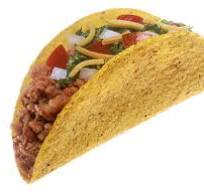

Taco

Ingredients
- Shredded cheese
- Shredded lettuce
- Chopped tomatoes
- Diced onion
- Sliced avocado
- Sour cream
- Guacamole
Step by Step
- Break apart lean ground beef in a skillet over medium-high heat.
- Add chili powder, cumin, salt, oregano, garlic powder, and pepper.
- Cook until the beef is browned.
- Add tomato sauce and water to the meat.
- Cook until some liquid has evaporated, but the meat is still saucy.
- Spoon 2 tablespoons of the taco meat into hard taco shells or small soft tortillas.
- Top the tacos with your favorite traditional taco toppings.